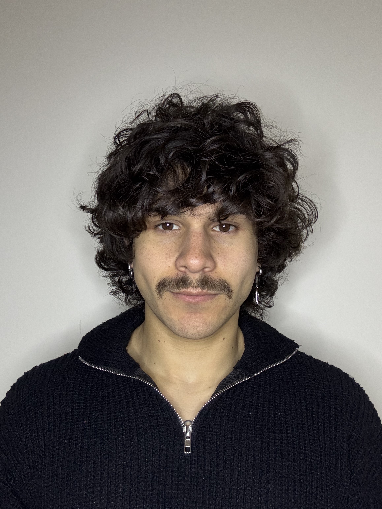

Giuliano Testa - Full Stack Web Developer

Sono un neolaureato in informatica di 26 anni, amo il mondo dello sviluppo web e soprattutto il design dietro un sito web
Education
- Laurea Triennale in Informatica - Università di Catania
- Diploma - Liceo Scientifico E.Fermi - Paternò
Work Experience
- Responsabile alla produzione - Diamond Chemms S.r.l / Aprile 2026 - Giugno 2026
- Responsabile di Sala - DL Food & Drink - Nicolosi / Giugno 2024 - Ottobre 2024
- Rider - Maluburger / Maggio 2021 - Gennaio 2022
Skills
- HTML, CSS, JS, React
- Problem Solving
- Ottima gestione
Contact me